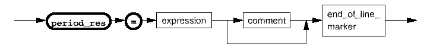

Period resolution (period_res)
Normally, period resolution is determined automatically from the period of timing set 1. However, if you are not satisfied with this, it can be overridden using the following syntax.

expression |
Note If the equations section is missed out so that the specs section is followed by
the period_resolution section, period_res will be treated as a spec. To
avoid this, always include an equation section, even if it only contains the
EQUATIONS keyword.